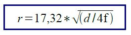

Se llama Zona de Fresnel al volumen de espacio entre el emisor de una onda electromagnética, acústica, etc.- y un receptor, de modo que el desfase de las ondas en dicho volumen no supere los 180º. Así, la fase mínima se produce para el rayo que une en línea recta al emisor y el receptor.
La Zona de Fresnel se calcula con el radio del elipsoide de Fresnel en metros por raiz de la distancia total entre el transmisor y el receptor, divido la frecuencia en GHz * 4.
d = Distancia total entre transmisor y receptor en kilometros
f = Frecuencia en GHz
r = Altura en metros que deben tener las antenas